Adirondack NTF I had a Saturday free from hunting because
the truck decided
not to start. So, I ran out to the parents'
place and worked with Adiron.
He's lunged, worn a bridle and saddle
and ground driven off the halter,
so this time I drove off the bit and introduced
the idea of a rider.
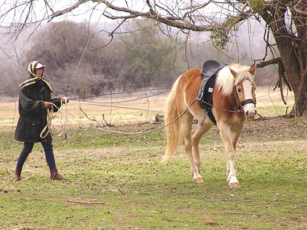
We lunged a bit to get back in the
swing of things, but I wanted to see how much he remembered of ground driving
and how the bit affected things.
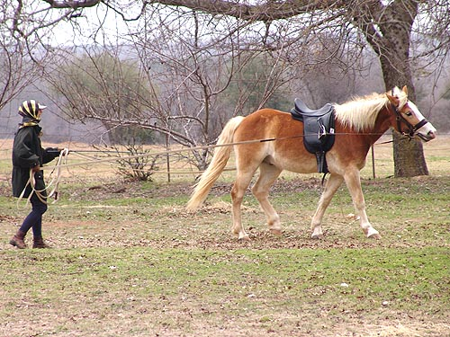
I haven't gotten around to lunging
Adiron in side reins. I think if I had, he wouldn't bother pulling on the
bit like he is here.
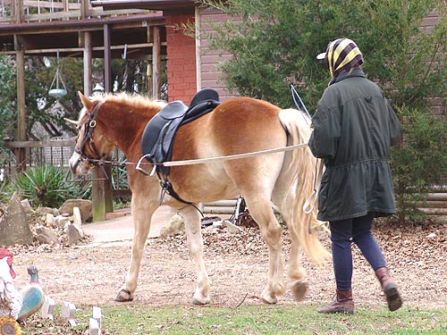
Driving around the house area was
a little scary for him, but the most he did was hesitate and look at all
the strange things around us. He didn't spin and wrap the reins around
himself like Thistle did a couple of weeks ago....
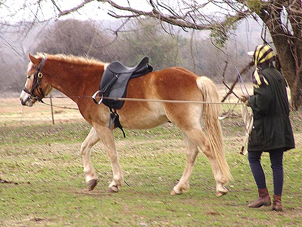
I'm really not as close as it seems.
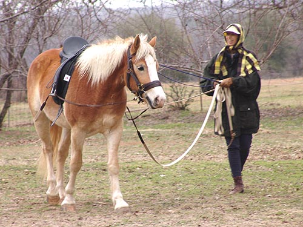
Usually I'm off to one side or the
other.
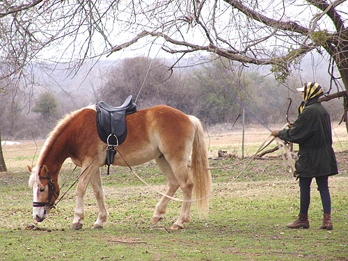
Now I'd understand why you'd want
something to keep the head up while you're driving.
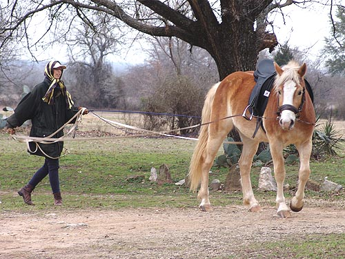
Adiron figured out the going and turning
and not worrying about the bit pretty quick. These Haflingers just don't
get so worried. They don't get frustrated when I'm asking them in a new
and strange way. They just keep giving answers until it's the right one.
At that point they get a lot of praise, and we do it again to see if I
get the same answer. At this age, not a lot of repetition. Getting it twice
works for me right now.
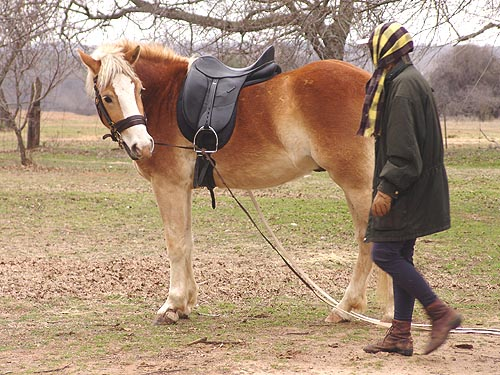
We did work on whoa, a bit, too. It's
nice to confirm whoa, then drop the reins and walk up to the horse without
them moving. I like placing feet, and having them stay.
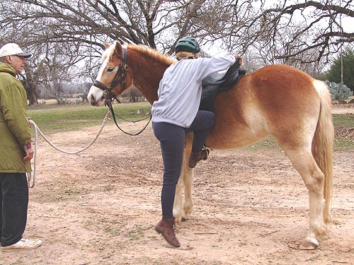
A more relaxed attitude about backing
Adiron. I had my trainer out for Thistle because I was a bit nervous. I
felt I could handle Adiron on my own, but it's always best to have someone
around.
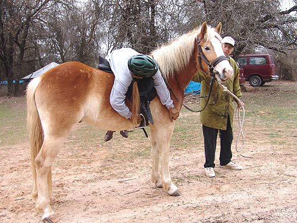
At one point Adiron got bored and
started walking forward. Father said whoa and he immediately stopped. He
really wasn't that concerned that I was moving around on his back while
he was walking.
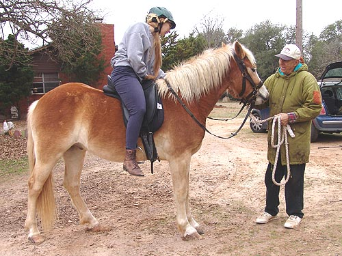
We could have walked around, but no
need to rush. He seemed happy for the attention and to be away from the
other horses. There was also the encouragement from the photographer (mother)
that this was enough for now and I should get off while he was doing good....
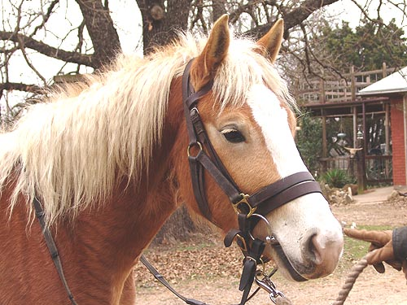
He still looks so young. He'll
be three in a month or so and he seems ready for riding mentally. It's
good I've also got Thistle to play with, so I don't push either of them
too fast.